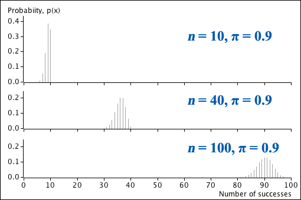
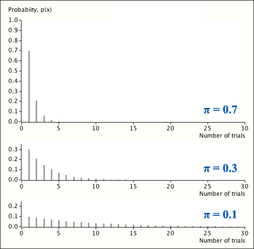
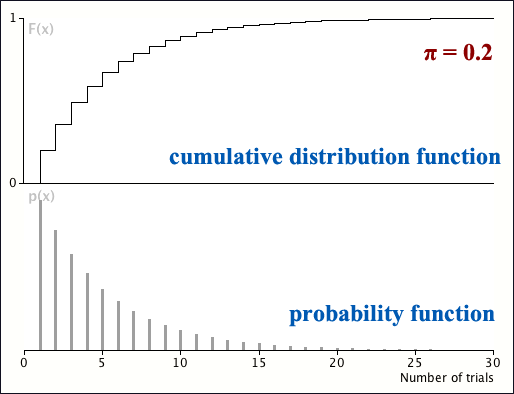
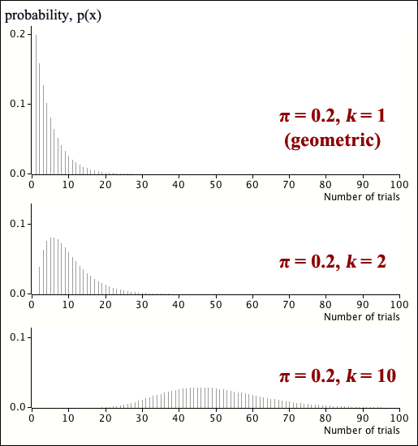
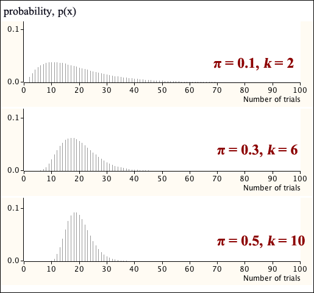

If you don't want to print now,
A random experiment with only two possible outcomes (that we call "success" and "failure") is called a Bernoulli trial.
We now define a numerical variable based on one such Bernoulli trial.
Definition
If there is an event \(A\) for which \(P(A) = \pi\), and a random variable \(X\) is defined by
\[ X = \begin {cases} 1 & \quad \text{if } A \text{ occurs (a success)}\\[0.5em] 0 & \quad \text{if } A \text{ does not occur (a failure)} \end {cases} \]then \(X\) has a Bernoulli distribution with parameter \(\pi\),
\[ X \;\; \sim \; \; \BernoulliDistn(\pi) \]\(X\) is therefore a discrete random variable with probability function:
\[ p(x) = \begin {cases} \pi & \quad \text{if } x = 1\\[0.5em] (1 - \pi) & \quad \text{if } x = 0\\[0.5em] 0 & \quad \text{otherwise} \end {cases} \]Although a single Bernoulli trial is too simple to be of much practical importance, situations often arise that can be treated as sequences of independent Bernoulli trials, all of which have the same probability of success.
We now show the mean and variance of a Bernoulli distribution,
\[ p(x) = \begin {cases} \pi & \text{if } x = 1\\[0.5em] (1 - \pi) & \text{if } x = 0\\[0.5em] 0 & \text{otherwise} \end {cases} \]Bernoulli mean and variance
If a random variable \(X\) has a \(\BernoulliDistn(\pi)\) distribution, its mean and variance are
\[ E[X] = \pi \spaced{and} \Var(X) = \pi(1-\pi) \](Proved in full version)
A binomial distribution arises from a sequence of independent Bernoulli trials.
Definition
If the following conditions hold:
then the total number of successes, \(X\), has a binomial distribution with parameters n and \(\pi\).
\[ X \;\; \sim \;\; \BinomDistn(n, \pi) \]In most practical applications, the parameter \(\pi\) is an unknown constant, but occasionally we know its value.
Before using a binomial distribution, we must be able to argue from the context that the above three assumptions hold.
The probability function for the \(\BinomDistn(n, \pi)\) distribution can be found by counting how many distinct sequences of \(n\) Bernoulli trials that result in \(x\) successes, then multiplying this by the probability of any one such sequence.
Binomial probability function
If \(X\) has a \(\BinomDistn(n, \pi)\) distribution, its probability function is
\[ p(x)= {n \choose x} \pi^x(1-\pi)^{n-x} \qquad \text{for } x=0, 1, \dots, n \](Proved in full version)
Number of successes
Since the number of successes, \(X\), can be written as the sum of \(n\) independent Bernoulli variables, we can find the binomial mean and variance from those of the Bernoulli distribution.
Binomial mean and variance
If \(X\) has a binomial distribution with probability function
\[ p(x)= {n \choose x} \pi^x(1-\pi)^{n-x} \quad \quad \text{for } x=0, 1, \dots, n \]then its mean and variance are
\[ E[X] = n\pi \quad\quad \text{and} \quad\quad \Var(X) = n\pi(1-\pi)\](Proved in full version)
Proportion of successes
The proportion of successes has a closely related distribution since
\[ P = \frac X n \]Proportion of successes
The proportion of successes in a binomial experiment, \(P\), has mean and variance
\[ E[P] = \pi \spaced{and} \Var(P) = \frac {\pi(1-\pi)} n \](Proved in full version)
Mode
The distributions of \(X\) and \(P\) are 'unimodal' — there is either a single value (or two adjacent ones) with maximum probability, with probabilities decreasing steadily on each side.
Shape
The distributions of \(X\) and \(P\) are symmetric if \(\pi = 0.5\), but skew with a longer right tail when \(\pi \lt 0.5\) and skew with a longer left tail when \(\pi \gt 0.5\).
As \(n\) increases, the distribution's shape becomes more symmetric.
Centre and spread of \(X\)
Both the mean and variance of \(X\) increase with \(n\).
The variance of \(X\) is highest when \(\pi = 0.5\) and decreases as \(\pi\) approaches 0 or 1.

Centre and spread of \(P\)
The mean of \(P\) is not affected by \(n\), but its variance decreases as \(n\) gets larger.

Normal approximation
The Central Limit Theorem can be applied to the distributions of both \(X\) and \(P\):
\[ \begin{align} X &\;\; \xrightarrow[n \rightarrow \infty]{} \; \; \NormalDistn\left(\mu_X = n\pi, \;\;\sigma_X^2 = n\pi(1-\pi) \right) \\ P &\;\; \xrightarrow[n \rightarrow \infty]{} \; \; \NormalDistn\left(\mu_P = \pi, \;\;\sigma_P^2 = \frac{\pi(1-\pi)} n \right) \end{align} \]Binomial probabilities may be obtained using ...
Excel
In Excel, the function "BINOM.DIST()" can be used to find binomial probabilities. For example, if \(X \sim \BinomDistn(n=20, \pi=0.3)\),
Scientific calculator
If \(X \sim \BinomDistn(n=20, \pi=0.3)\) then a scientific calculator can find:
Probabilities for ranges of counts
Care must be taken with the wording of questions — should the 'extreme' value that is mentioned in the wording of the interval be included? For example,
| In words... | In terms of X | Using ½ |
|---|---|---|
| More than 5 | X > 5 | X > 5.5 |
| Greater than or equal to 5 | X ≥ 5 | X > 4.5 |
| No more than 5 | X ≤ 5 | X < 5.5 |
| At least 5 | X ≥ 5 | X > 4.5 |
| Fewer than 5 | X < 5 | X < 4.5 |
| 5 or fewer | X ≤ 5 | X < 5.5 |
The final column most clearly expresses which values of \(X\) are included.
We recommend translating any interval into its form using ½ before finding its probability.
Translating the interval in this way is particularly useful when using a normal approximation to evaluate the probability. In this context, it is called a continuity correction.
A binomial distribution's cumulative probability at \(x\) is the probability of a value less than or equal to a constant \(x\),
\[ F(x) = P(X \le x) = \sum_{u \le x} {p(u)} = \sum_{u=0}^{\lfloor x \rfloor} {{n \choose u}\pi^x (1-\pi)^{n-x} }\]where \(\lfloor x \rfloor\) denotes the largest integer less than or equal to \(x\). Note that, unlike the probability function \(p(x)\), this is defined for all \(x\), not just for integer values.
Unfortunately there is no simple formula for the cumulative probabilities of the binomial distribution.
When treated as a function of \(x\), this is the distribution's cumulative distribution function (CDF) — a step function that increases by \(p(x)\) at each integer value from 0 to \(n\).

Bernoulli trials until first success
Definition
In a sequence of independent Bernoulli trials with \(P(success) = \pi\) in each trial, the number of trials until the first success is observed has a distribution called a geometric distribution.
\[ X \;\; \sim \; \; \GeomDistn(\pi) \]The probability function of a geometric random variable is relatively simple.
Probability function
If a random variable has a geometric distribution, \(X \sim \GeomDistn(\pi) \), then its probability function is
\[ p(x) = \pi (1-\pi)^{x-1} \quad \quad \text{for } x = 1, 2, \dots \](Proved in full version)
The geometric probability function can be directly shown to satisfy the required properties of a valid probability function.
The second property can be proved using following mathematical result.
Sum of geometric series
If \(-1 < a < 1\), then
\[ \sum_{x=0}^\infty {a^x} = \frac 1 {1-a} \](Proved in full version)
Shape of the geometric distribution
Each geometric probability is \( (1-\pi) \) times that of the previous one, so the probabilities decrease steadily from the mode at \(x = 1\).

Cumulative distribution function
The cumulative distribution function for the geometric distribution with probability function
\[ p(x) = \pi (1-\pi)^{x-1} \quad \quad \text{for } x = 1, 2, \dots \]is
\[ F(x) = \begin{cases} 1 - (1-\pi)^{\lfloor x \rfloor} & \text{for } x \ge 0 \\ 0 & \text{for } x \lt 0 \end{cases} \]where \(\lfloor x \rfloor\) denotes the largest integer less than or equal to \(x\).
(Proved in full version)
An example is shown below.

The probability below can be found by adding a few geometric probabilities.
Question
If a fair six-sided die is rolled repeatedly, what is the probability that it will take between 6 and 8 rolls (inclusive) to get the first "six"?
(Solved in full version)
Adding probabilities like this works provided there are not too many of them. However an alternative way to find probabilities is to use the cumulative distribution function.
Question
If a fair six-sided die is rolled repeatedly, what is the probability that it will take between 10 and 20 rolls (inclusive) to get the first "six"?
(Solved in full version)
Derivation of formulae for the mean and variance of the geometric distribution requires summation of two series that are closely related to the summation of a geometric series.
Two mathematical results
If \(-1 < a < 1\), then
\[ \begin{align} \sum_{x=0}^\infty {x \times a^x} & = \frac a {(1-a)^2} \\ \sum_{x=0}^\infty {x^2 \times a^x} & = \frac {a(1+a)} {(1-a)^3} \end{align} \](Proved in full version)
We now give the mean and variance of the geometric distribution.
Mean and variance
If a random variable has a geometric distribution, \(X \sim \GeomDistn(\pi) \) with probability function
\[ p(x) = \pi (1-\pi)^{x-1} \qquad \text{for } x = 1, 2, \dots \]then its mean and variance are
\[ E[X] = \frac 1 {\pi} \spaced{and} \Var(X) = \frac {1 - \pi} {\pi^2} \](Proved in full version)
Waiting for the k'th success
The number of independent Bernoulli trials until the first success is observed has a geometric distribution. We now generalise this to consider the number of trials until we observe the \(k\)'th success.
Definition
In a sequence of independent Bernoulli trials with \(P(success) = \pi\) in each trial, the number of trials until the \(k\)'th success is observed has a distribution called a negative binomial distribution.
\[ X \;\; \sim \; \; \NegBinDistn(k, \pi) \]The probability function for the negative binomial distribution can be fairly easily obtained.
Negative binomial probability function
If a random variable has a negative binomial distribution, \(X \sim \NegBinDistn(k, \pi) \), then its probability function is
\[ p(x) = \begin{cases} \displaystyle{{x-1} \choose {k-1}} \pi^k(1-\pi)^{x-k} & \text{for } x = k, k+1, \dots \\[0.5em] 0 & \text{otherwise} \end{cases} \](Proved in full version)
The negative binomial distribution is identical to the geometric distribution when \(k=1\).

The distribution's second parameter gives more flexibility in its possible shape than the geometric distribution. The following three negative binomial distributions all have the same mean (μ = 20).

Number of failures until \(k\)'th success
Confusingly, an alternative definition of a negative binomial random variable is also in common use. Instead of the number of trials until the \(k\)'th success, it is sometimes defined as the number of failures until the \(k\)'th success is observed.
Definition
In a sequence of independent Bernoulli trials with \(P(success) = \pi > 0\) in each trial, the number of failures observed before the \(k\)'th success is observed has a distribution that is also called a negative binomial distribution.
\[ X^* \;\; \sim \; \; \NegBinDistn^*(k, \pi) \]If the \(k\)'th success is observed on the \(X\)'th trial, there must have been \((X - k)\) failures, so
\[ X^* \;\; = \; \; X - k \]Alternative distribution's probability function
If \( X^* \sim \NegBinDistn^*(k, \pi) \), then it has probability function
\[ p(x) = \begin{cases} \displaystyle{{x + k -1} \choose {k-1}} \pi^k(1-\pi)^x & \quad \text{for } x = 0, 1, \dots \\[0.5em] 0 & \quad \text{otherwise} \end{cases} \](Proved in full version)
It is important to carefully identify which type of negative binomial distribution to use in any context.
Excel
Excel has a function that will evaluate either single negative binomial probabilities or cumulative probabilities, "NEGBINOM.DIST()". For example, if the probability of success is π = 0.3 and we are interested in how long it takes to get \(k = 5\) successes,
Excel is implicitly using the second form of negative binomial distribution for the number of failures before the \(k\)'th success.
On a scientific calculator
Negative binomial probabilities can also be found on a scientific calculator directly using the formula for its probability function.
Question
If a coin is repeatedly tossed, what is the probability that the second head will appear on the fifth toss of the coin?
(Solved in full version)
Direct evaluation of cumulative probabilities
There is no simple formula for the negative binomial distribution's cumulative distribution function, \(F(x)\) but individual negative binomial probabilities can be added,
\[ F(x) = \sum_{u=k}^{\lfloor x \rfloor} {{u-1} \choose {k-1}} \pi^k(1-\pi)^{u-k} \]where \(\lfloor x \rfloor \) denotes the smallest integer less than or equal to \(x\).
Cumulative probabilities from binomial distribution
If \(k\) is much smaller than \(x\), there is a simpler method since taking more than \(x\) trials to get the \(k\)'th success is equivalent to there being fewer than \(k\) successes in the first \(x\) trials.
\[ \begin{align} P(X \gt x) & = P(\text{fewer than } k \text{ successes in first } x \text{ trials}) \\ & = \sum_{v=0}^{k-1} {x \choose v} \pi^v (1-\pi)^{x-v} \end{align}\]The cumulative probability is \(F(x) = 1 - P(X \gt x)\).
Cumulative probabilities in Excel
These formulae can be avoided if Excel is used. Again the function "NEGBINOM.DIST()" is used, but with its last parameter set to true. For example, if the probability of success is π = 0.3 and we are interested in how long it takes to get \(k = 5\) successes,
Question
If a fair six-sided die is rolled repeatedly, what is the probability that it will take more than 20 rolls before three sixes are observed?
(Solved in full version)
We now give formulae for the mean and variance of the negative binomial distribution.
Mean and variance
If the random variable \(X\) has a negative binomial distribution with probability function
\[ p(x) = \begin{cases} \displaystyle{{x-1} \choose {k-1}} \pi^k(1-\pi)^{x-k} & \quad \text{for } x = k, k+1, \dots \\[0.5em] 0 & \quad \text{otherwise} \end{cases} \]then its mean and variance are
\[ E[X] = \frac k {\pi} \spaced{and} \Var(X) = \frac {k(1-\pi)} {\pi^2} \](Proved in full version)
Since the alternative type of negative binomial distribution (for the number of failures before the \(k\)'th success) is for
\[ X^* \;\; = \; \; X - k \]its mean is simply \(k\) less than that of \(X\) and its variance is the same,
\[ E[X^*] = \frac k {\pi} - k = \frac {k(1-\pi)} \pi \spaced{and} \Var(X^*) = \frac {k(1-\pi)} {\pi^2} \]What you need to know in this chapter
You should concentrate on the following material when studying the chapter about distributions based on successes and failures.
3.1 Bernoulli distribution
You should understand how random variables with Bernoulli distributions are related to successes and failures and be able to derive the mean and variance of the distribution.
3.2-4 Binomial, Geometric and Negative binomial distributions
You must be able to identify which (if any) of these distributions is appropriate for any context that is described in words. The assumptions underlying the distributions should also be known and you should be able to derive their probability functions (pages 3.2.1-2, 3.3.1 and 3.4.1-2). Be careful to distinguish between the two types of negative binomial distribution (3.4.2).
You should be able to evaluate probabilities (including cumulative ones) relating to specific distributions of these types, both using Excel and by hand with a calculator (pages 3.2.5-6, 3.3.3-4 and 3.4.3-4).
You will not be expected to derive the mean and variance of the geometric distribution, but should be able to find the formulae for those of the binomial and negative binomial distributions (pages 3.2.3 and 3.4.5).